Import README.md
Open the importer, paste the bundled source path, run a dry run, then create drafts from Markdown, HTML, and text files.
Content portability for WordPress
PortPress turns files, feeds, archives, PDFs, repositories, WXR exports, and old sites into WordPress drafts. When the site is ready, it exports public pages as static HTML, assets, and same-site links.
The demo opens to a checklist, sample source files, seeded WordPress content, and both tools already installed.
Use WordPress as the review bench between messy source material and portable static output.

The same demo follows this loop: source files become reviewable WordPress drafts, and reviewed pages become a portable static site package.
Playground runs in the browser and is disposable. Use it to learn the workflow, then move to a real WordPress install or WP-CLI for persistent storage and larger files.
Open the demo, then use this source path in the importer:
/wordpress/wp-content/uploads/portpress-source

Open the importer, paste the bundled source path, run a dry run, then create drafts from Markdown, HTML, and text files.
Open the generated WordPress content, check titles and blocks, and make URL decisions before publishing anything.
Export the seeded site or your imported content, download the ZIP, then inspect static HTML, CSS, assets, and rewritten links.
The demo teaches the loop. The import and export guides go deeper when you are working with a real source or site.
Prepare content, import media, record progress, and pause for URL decisions instead of guessing.
Render public pages, rewrite same-site links, copy assets, and package files for static hosting.
Imported content should be inspected as drafts before it becomes public.
Dynamic features such as checkout, forms, comments, and REST writes still need a backend or replacement service.
Use command-line flows when imports or exports need to run reliably in local automation or CI.
Static exports can be opened from disk for quick checks, but JavaScript modules and production-like behavior need a local HTTP server.